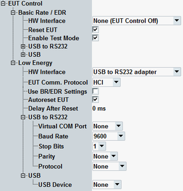

Configures a USB connection to the EUT.

Defines the type of USB connection used for tests. During LE connections, the interface is used for the direct test control commands. During BR/EDR connections, the interface is used as an additional control channel for example to enable test mode automatically, or reset the EUT, see "Initialize EUT (hotkey)". To detect an EUT connected via USB, the driver must be installed, refer to "Tests with USB Interface".
- None: tests without a USB control connection.
For BR/EDR connections, communication with the EUT is realized via RF interface only. The EUT is controlled manually, for example enabling test mode directly at the device.
For LE connections, the RX quality measurement is supported without controlling direct test mode. The test is started manually by the EUT. The R&S CMW sends several test packets to the EUT. This method is applicable only to the EUT that can count received packets. - USB to RS232 adapter: support of the secondary communication channel via USB connection with USB to RS232 adapter.
- USB: support of the secondary communication channel via direct USB connection.
For the test setup, refer to "Tests with USB Interface".
Remote command:Optional reset before starting an RX or TX test for BR/EDR or before starting an LE audio connection.
Remote command:Enables test mode at the EUT automatically. The command is only relevant for BR/EDR connections via USB.
Remote command:Selects the communication protocol in accordance with the EUT implementation:
- "HCI": for EUTs with accessible host interface
- "2-wire": for EUTs that use an embedded, non-accessible host
Specifies whether the BR/EDR configuration of COM port and USB settings has to be used also for LE burst types.
Resets EUT at the beginning of a direct test.
Remote command:Specifies a delay after reset on a LE device. The parameter is only relevant if "Autoreset EUT" is set to ON. The delay is applied when performing the connection check or at the beginning of a direct test.
Option R&S CMW-KS611 is required.
Remote command:Specifies the transmission parameters of the virtual serial interface used for USB connection with USB to RS232 adapter.
The USB port to which the EUT is connected is mapped automatically onto the virtual COM port.
- "Virtual Com Port": specifies the port, to which the used USB port has been mapped. The virtual COM port used by the EUT can be automatically detected by pressing the hotkey "Refresh COM Port List", see "Refresh COM Port List (hotkey)".
- "Baud Rate": data transmission rate
- "Stop Bits", "Parity": number of bits used for stop indication, parity
- "Protocol": flow control
Specifies the tested device connected directly via USB port. The R&S CMW lists only the detected EUTs.
Remote command: